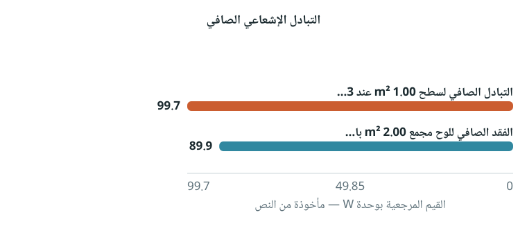

التبادل الإشعاعي الصافي
Net radiative heat exchange
التبادل الإشعاعي الصافي هو صافي الطاقة التي يتبادلها جسمان أو جسم ومحيطه بالإشعاع الحراري، ويُحسب من فرق الأس الرابع لدرجتي حرارتهما: q = ε·σ·A·(T₁⁴ − T₂⁴). يُفسّر فقد الحرارة من المباني ليلاً وتبريد الأسطح المكشوفة وعمل المجمعات الشمسية.
كل جسم فوق الصفر المطلق يشع طاقة بمعدل يتناسب مع الأس الرابع لدرجة حرارته المطلقة. وحين يكون الجسم داخل محيط بدرجة حرارة أخرى، فإنه يستقبل منه إشعاعاً ويشع إليه، والصافي هو الفرق: q = ε·σ·A·(T₁⁴ − T₂⁴) لجسم صغير داخل محيط كبير. والانبعاثية ε تصف كفاءة السطح في الإشعاع مقارنة بالجسم الأسود. مثال: سطح مساحته 1.00 m² بانبعاثية 0.90 عند 300 K داخل محيط 280 K: q = 0.90 × 5.670 374 419×10⁻⁸ × 1.00 × (300⁴ − 280⁴) = 0.90 × 5.670×10⁻⁸ × (8.100×10⁹ − 6.147×10⁹) = 99.7 W.
كيف تعمل الظاهرة؟
الإشعاع الحراري ينشأ من اهتزاز الشحنات داخل المادة بفعل حرارتها، فيصدر طيفاً متصلاً يتوزع على الأطوال الموجية بحسب قانون بلانك. وكل سطح يشع ويستقبل في الوقت نفسه، فالجسم الموجود داخل محيط يستقبل إشعاع المحيط ويشع إليه. وإذا كانت حرارته أعلى من المحيط كان الصافي خروجاً، وإذا كانت أقل كان الصافي دخولاً. ولأن القدرة تتناسب مع T⁴، فإن فرقاً صغيراً في الحرارة عند درجات عالية يعني تبادلاً كبيراً، ولهذا يفقد الجسم حرارة سريعاً بالإشعاع عند الحرارة العالية.
العلاقة بالأرقام
q = ε·σ·A·(T₁⁴ − T₂⁴). مثال: A = 1.00 m²، ε = 0.90، T₁ = 300 K، T₂ = 280 K → 300⁴ = 8.100×10⁹، 280⁴ = 6.147×10⁹، الفرق = 1.953×10⁹، وq = 0.90 × 5.670 374 419×10⁻⁸ × 1.00 × 1.953×10⁹ = 99.7 W. وللمقارنة، لو كان الجسم أسود تماماً ε = 1.00 لصار q = 110.8 W، أي بزيادة 11%. ولو ارتفعت حرارته إلى 310 K لصار الفرق 9.235×10⁹ − 6.147×10⁹ = 3.088×10⁹ وq = 157.6 W.
مفاهيم متقاربة
يُفرَّق بين التبادل الصافي والإشعاع الصادر في أن الأول يعتمد على حرارة المحيط أيضاً. ويُفرَّق بين قانون ستيفان-بولتزمان وقانون بلانك: الأول تكامل على كل الأطوال الموجية، والثاني يعطي التوزيع الطيفي. ويُفرَّق بين الانبعاثية الكلية والطيفية: الكلية متوسط على الطيف، والطيفية دالة لطول الموجة، والفرق مهم في الطلاءات الانتقائية. وأخيراً يُفرَّق بين جسم صغير داخل محيط كبير وجسمين متقابلين: الثاني يحتاج معامل تبادل هندسي F يعتمد على المساحات والزوايا.
حدود التطبيق
الصيغة المبسطة تفترض جسماً صغيراً داخل محيط كبير، فإذا كانت المساحات متقاربة وجب إدخال معامل التبادل الهندسي. وتفترض انبعاثية ثابتة، وهو غير صحيح للأسطح المعدنية المصقولة التي تتغير انبعاثيتها كثيراً مع الطول الموجي والحرارة. ولا تصف الإشعاع في الأوساط المشاركة كالغازات الماصة أو الدخان، حيث يمتص الوسط ويشع فيُحلّ بمعادلة انتقال الإشعاع. كذلك لا تُستعمل وحدها عند وجود حمل حر أو قسري مؤثر، بل تُجمع معه في معامل انتقال حراري إشعاعي مكافئ.

| الكمية | القيمة | المصدر |
|---|---|---|
| ثابت ستيفان-بولتزمان σ | 5.670 374 419×10⁻⁸ W·m⁻²·K⁻⁴ | [1] |
| التبادل الصافي لسطح 1.00 m² عند 300 K داخل 280 K | 99.7 W | [1] |
| الفقد الصافي للوح مجمع 2.00 m² بانبعاثية 0.10 | 89.9 W | [1] |
المصادر
- 1 CODATA Value: Stefan-Boltzmann constant — NIST — CODATA 2022 recommended values (2024). physics.nist.gov/cgi-bin/cuu/Value?sigma · اطُّلع عليه 2026-11-21
- 2 CODATA Value: Planck constant — NIST — CODATA 2022 recommended values (2024). physics.nist.gov/cgi-bin/cuu/Value?h · اطُّلع عليه 2026-11-21
- 3 University Physics Volume 2 — 1.6 Mechanisms of Heat Transfer — OpenStax, Rice University (2026). openstax.org/books/university-physics-volume-2/pages/1-6-mechanisms-of-heat-transfer · اطُّلع عليه 2026-11-21
استشهد بهذا المصطلح
الصيغتان مبنيتان من بيانات الصفحة نفسها: العنوان والتاريخ ورابط النسخة المنشورة.
التبادل الإشعاعي الصافي — Net radiative heat exchange. (2026). ديوان المعرفة — انفراد. https://infiradev.com/diwan/terms/term-thermal-radiation-net-exchange.html
@misc{term-thermal-radiation-net-exchange2026,
title = {التبادل الإشعاعي الصافي},
titleaddon = {Net radiative heat exchange},
howpublished = {{ديوان المعرفة — انفراد} — مرجع علمي عربي},
year = {2026},
url = {https://infiradev.com/diwan/terms/term-thermal-radiation-net-exchange.html},
urldate = {2026-11-26},
note = {مراجعة علمية: hermes (مراجعة معتمدة 2026-11-26)}
}
راجعه: hermes (مراجعة معتمدة 2026-11-26) · 2026-11-26 · آخر تحديث 2026-11-21